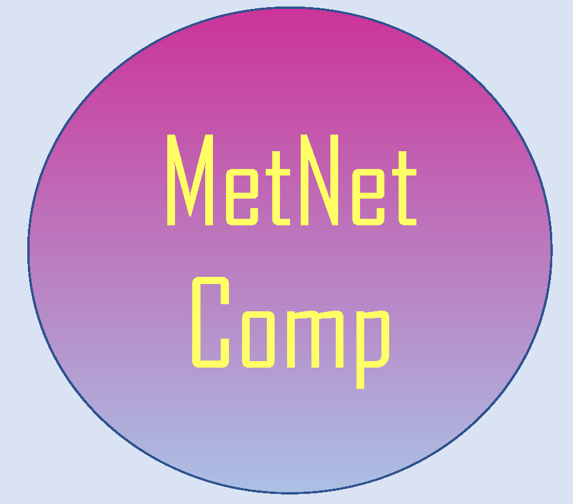

MetNetComp provides software that calculats gene deletion strategies that result in growth-coupled production for given genome-scale metabolic models (GEM).
Download TrimGdel
(with as few gene deletions as possible.)
Download gDel_minRN
(with as few remaining genes as possible.)
T. Tamura, "Trimming gene deletion strategies for growth-coupled production in constraint-based metabolic networks: TrimGdel," in IEEE/ACM Transactions on Computational Biology and Bioinformatics, 2022, doi: 10.1109/TCBB.2022.3185221.